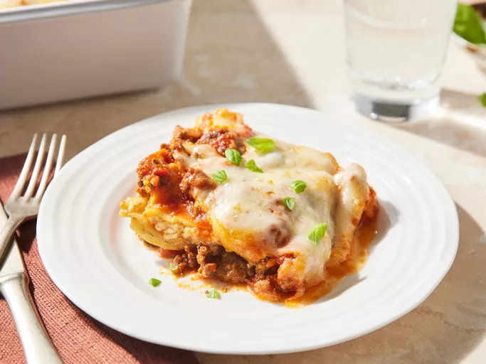

Lasagna Recipe
Back to Home

Description:
Lasagna is a classic Italian dish made with layers of pasta, meat sauce, and cheese.
This recipe provides a delicious and hearty meal that is perfect for family dinners or special occasions.
Enjoy the rich flavors and comforting textures of this traditional favorite.
Ingredients:
- 1 pound ground beef
- 1 onion, chopped
- 2 cloves garlic, minced
- 1 (24-ounce) jar tomato sauce
- 12 lasagna noodles
- 15 ounces ricotta cheese
- 2 cups shredded mozzarella cheese
- 1/2 cup grated Parmesan cheese
- Salt and pepper to taste
Instructions:
- Preheat the oven to 375°F (190°C).
- Cook the lasagna noodles according to the package instructions.
- In a large skillet, brown the ground beef and drain the excess fat.
- Add the garlic and cook for another minute.
- Stir in the tomato sauce and simmer for 15 minutes.
- Layer the lasagna noodles, meat sauce, and ricotta cheese in a baking dish.
- Bake for 30 minutes or until golden brown.